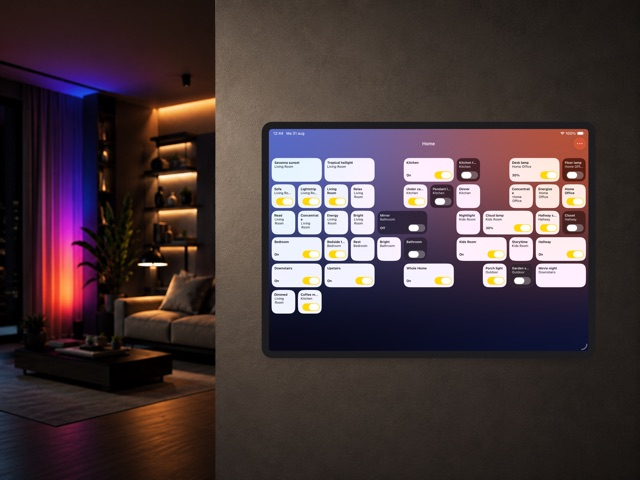

Fact sheet
- App: Hue Dashboard
- What it is: A control panel app for Philips Hue. Lights, scenes, and rooms sit as tiles on a fixed grid, so controls stay in the same place instead of shifting around like they do in the stock Hue app or Apple Home.
- Price: Free, with possible in-app purchases for upcoming features.
- Platforms: iPhone and iPad, iOS 26 or later
- Release date: Released September 3, 2026
- Developer: Pim Nijman, based in the Netherlands.
- App Store: apps.apple.com/nl/app/hue-dashboard
- Website: pimnijman.nl/huedashboard
About Hue Dashboard
Hue Dashboard is a control panel for Philips Hue lighting, built for iPhone and iPad. It is aimed at people who want quick, reliable access to their lights, especially on a phone or iPad that stays mounted on a wall or fridge. It is free, and it works with your Philips Hue Bridge and alongside your existing Philips Hue app.
Most smart home apps rearrange their controls every time you add a light, room, or scene. Hue Dashboard takes the opposite approach. You place lights, scenes, and rooms as tiles on a grid, and each tile keeps its position. Like the dashboard of a car, you learn where things are once and your hand finds them without looking. That consistency matters most on a device that lives in one spot on the wall and is used dozens of times a day.
The app includes a demo mode, so anyone can explore the full grid and panel system without owning Hue hardware or connecting a bridge first. It comes from the same developer as Hue Widgets and Hue for Watch, two existing Philips Hue apps on the App Store.
Key features
- Lights, scenes, and rooms appear as tiles on a customizable grid, and each tile keeps its position as your setup grows.
- Built for devices mounted on a wall or fridge that stay on and get used throughout the day.
- A demo mode lets anyone try the full app without a Philips Hue bridge.
- Comes from the developer of Hue Widgets and Hue for Watch, two established Philips Hue apps.
Images

iPad
iPhone
App icon isn't final yet — it'll be added here once it's ready.
Download everything as a zip (22 MB) — the lifestyle photo and all iPad and iPhone screenshots at full resolution.
About the developer
I'm an independent developer based in the Netherlands, building apps in my spare time alongside my full time job as an iOS developer at NS, the Dutch railway operator. Hue Dashboard grew out of my own iPad, mounted on my fridge, and my frustration that no existing app offered a spatially consistent way to control my lights. I've previously released Hue Widgets and Hue for Watch, two other apps for Philips Hue users.
Coverage of earlier apps
- MacStories: Hue Widgets' Interactive Widgets Are the Easiest Way to Control Complex Hue Lighting Scenes by John Voorhees
- Hueblog: Hue Widgets: Small iOS app enables missing function
Contact
Pim Nijman – pim@pimnijman.nl